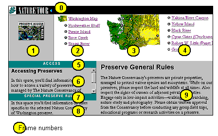
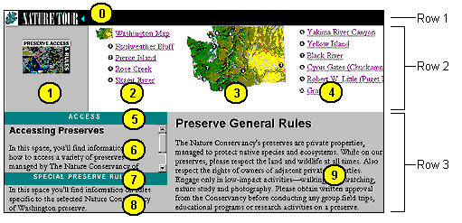
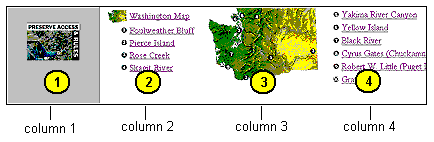
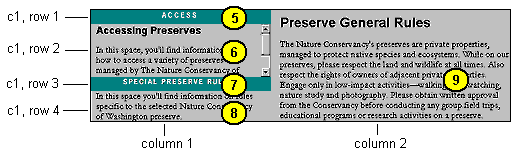
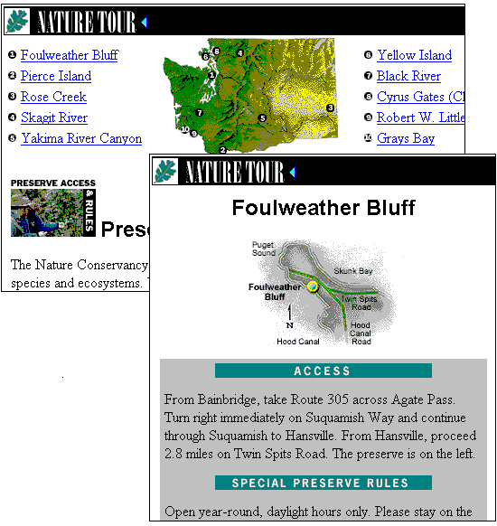

|
| ||
|
| ||
Roberta Leibovitz and Mary Haggard
Microsoft Corporation
September 6, 1996
Contents
Abstract
Introduction
Building the Frameset
Adding JScript to Update Frames
Other Code of Interest
Loading Graphics into Frames
Formatting Text Within Frames
Using Tables to Mimic Frames for Non-Frames Capable Browsers
This article explains the advanced frameset implementation used in the Nature Tour section of The Nature Conservancy of Washington Web site  .
.
We've assumed an understanding of HTML basics and framesets. For additional information on HTML authoring, please refer to the DHTML, HTML & CSS section of the MSDN Online Web Workshop Web site.
Clicking Nature Tour from The Nature Conservancy  home page, then selecting Preserve Access and Rules leads you to a page (http:www.tnc-washington.org/tour/tour006.htm
home page, then selecting Preserve Access and Rules leads you to a page (http:www.tnc-washington.org/tour/tour006.htm  ) that consists of a complicated set of ten frames. When you click a preserve name from the top frame (for example, "Skagit River"), you'll see three areas of the screen (the map, access information, and special preserve rules) change to provide information about that specific preserve. This functionality is achieved through a JScript function that updates multiple frames simultaneously. In this article, we'll begin by describing the frameset implementation on these pages, and then walk through the JScript code.
) that consists of a complicated set of ten frames. When you click a preserve name from the top frame (for example, "Skagit River"), you'll see three areas of the screen (the map, access information, and special preserve rules) change to provide information about that specific preserve. This functionality is achieved through a JScript function that updates multiple frames simultaneously. In this article, we'll begin by describing the frameset implementation on these pages, and then walk through the JScript code.
The opening page of Preserve Access and Rules  serves as a table of contents. It lists the preserves and shows their locations on a map of Washington State. General preserve rules for all sites appear in the lower-right side of the screen. The lower-left side of the screen is reserved for access information and special preserve rules.
serves as a table of contents. It lists the preserves and shows their locations on a map of Washington State. General preserve rules for all sites appear in the lower-right side of the screen. The lower-left side of the screen is reserved for access information and special preserve rules.

Figure 1. The Preserve Access and Rules frameset and its ten frames
If you choose view the source code (in Internet Explorer, choose Source from the View menu or right-click in the page and choose View Source), you'll find that the following code is used to define the complete frameset:
<frameset rows="30,170,*" framespacing=0 frameborder=0>
<!-- frames[0] -->
<frame src="tour039.htm" name="Navigation bar" scrolling="No"
framespacing=0>
<frameset cols="*,180,220,230" framespacing=0>
<!-- frames[1] -->
<frame src="tour036.htm" name="graphic" scrolling="No">
<!-- frames[2] -->
<frame src="tour037.htm" name="links1" scrolling="Auto">
<!-- frames[3] -->
<frame src="tour035.htm" name="Preserve Map" scrolling="No">
<!-- frames[4] -->
<frame src="tour038.htm" name="links2" scrolling="Auto">
</frameset>
<frameset cols="40%,60%">
<frameset rows="25,*,25,*">
<!-- frames[5] -->
<frame src="tour032.htm" name="header1" scrolling="No"
marginheight=0 marginwidth=0>
<!-- frames[6] -->
<frame src="tour051.htm" name="Directions">
<!-- frames[7] -->
<frame src="tour033.htm" name="header2" scrolling="No"
marginheight=0 marginwidth=0>
<!-- frames[8] -->
<frame src="tour052.htm" name="Special Rules">
</frameset>
<!-- frames[9] -->
<frame src="tour030.htm" name="General Rules">
</frameset>
</frameset>
As you can tell by the embedded <FRAMESET> tags, the frameset consists of three layers of frames. We will be walking through this code step by step, beginning with the outermost frameset and working our way in.
The first set of frames divides the screen into three rows.
Figure 2. First frameset layer
You define a frameset with the <FRAMESET> tag:
<frameset rows="30,170,*" framespacing=0 frameborder=0>
The first row contains the black Nature Tour bar and is 30 pixels high. The second row (170 pixels high) contains the Preserve Access and Rules graphic, the preserve hyperlinks, and the map of Washington State. The height of the last row , which contains the access information, special preserve rules, and general preserve rules, is determined by the vertical area that remains on the user's screen after the first and second rows use up 200 pixels. When the user adjusts the height of his or her browser window, the height of the first two rows stay constant, while the height of the last row changes. The FRAMESPACING and FRAMEBORDER settings indicate that there is no space between the rows and no border around the frames.
Row 1
Figure 3. Nature Tour bar
The Nature Tour bar is loaded into the top row with the following code:
<!-- frames[0] -->
<frame src="tour039.htm" name="Navigation bar" scrolling="No"
framespacing=0>
Note that the comment references frames[0], and the frame[n] reference, where n is some integer, is repeated throughout the frameset. This is a frames array defined for the JScript functionality that we will explain later in this article.
Row 2

Figure 4. Second frameset layer
The second row is divided into four columns, consisting of the Preserves and Access Rules image, the first and second sets of preserve hyperlinks, and the map of Washington State. These columns are coded using a second frameset consisting of four frames, as follows:
<frameset cols="*,180,220,230" framespacing=0> <!-- frames[1] --> <frame src="tour036.htm" name="graphic" scrolling="No"> <!-- frames[2] --> <frame src="tour037.htm" name="links1" scrolling="Auto"> <!-- frames[3] --> <frame src="tour035.htm" name="Preserve Map" scrolling="No"> <!-- frames[4] --> <frame src="tour038.htm" name="links2" scrolling="Auto"> </frameset>
The size of the first column is set with an asterisk, indicating that it is determined once the space for the other three columns is allocated. This allows the first column to be adjusted when the user changes the size of the browser window, while leaving the width of the preserve links and map areas as fixed as possible. The code also defines the frame names and the scrolling options for each frame. The Auto option allows the browser to display scroll bars only when necessary.
Row 3

Figure 5. Third frameset layer
Row 3 is first divided into two columns. The width of the left column is 40% of the row, and the right column takes up the remaining 60% of the row.
<frameset cols="40%,60%">
The left column is divided into four rows, defined through a third frameset:
<frameset rows="25,*,25,*">
<!-- frames[5] -->
<frame src="tour032.htm" name="header1" scrolling="No"
marginheight=0 marginwidth=0>
<!-- frames[6] -->
<frame src="tour051.htm" name="Directions">
<!-- frames[7] -->
<frame src="tour033.htm" name="header2" scrolling="No"
marginheight=0 marginwidth=0>
<!-- frames[8] -->
<frame src="tour052.htm" name="Special Rules">
</frameset>
The first and third rows, which display the Access and Special Preserve Rules headings, are 25 pixels high. The second and fourth rows provide the text for these two sections and take up the rest of the column. No scrolling option is defined for the second and fourth rows, so the browser uses a default of "Auto" and automatically adds vertical scroll bars when necessary (as you can see for row 2 in the screen illustration above).
The right column displays the Preserve General Rules text:
<!-- frames[9] --> <frame src="tour030.htm" name="General Rules">
Finally, this frameset and the outer frameset that defines rows 1, 2 and 3 are closed with two </FRAMESET> tags.
When you select one of the preserve hyperlinks (say, click "Foulweather Bluff"), you'll notice that three things change on the screen.
Normally, clicking a link within a frame will update only one other frame. In this case, three frames are updated. This functionality is achieved with the help of JScript code. When you view the JScript implementation (in Internet Explorer, right-click within one of the hyperlink areas -- to the right or left of the map, but not directly on a hyperlink -- and choose View Source from the pop-up menu), you'll see that the script defines a function called update:
<SCRIPT language="JavaScript">
<!--
function update(map, access, rules) {
parent.frames[3].location = map;
parent.frames[6].location = access;
parent.frames[8].location = rules;
}
// -->
</SCRIPT>
The update function does three things:
Frames [3], [6], and [8], as defined in the frameset code (see the last section), contain the Washington map, the Access text, and the Special Rules text, respectively. Move down through the source code to find the code that defines the values of the three parameters. For example, for the Foulweather Bluff entry, you'll see the code:
<!--
Foulweather Bluff;
directions: tour014.htm; rules: tour022.htm
-->
<tr>
<td align=right><img src="images/tour009.gif" border=0></td>
<td nowrap>
<A name="foulweather" href="tour037.htm"
onClick="update('tour040.htm','tour014.htm','tour022.htm')">
Foulweather Bluff</A></td>
</tr>
The JScript onClick event (shown in boldface in the code above) defines the events that occur when the user clicks "Foulweather Bluff". The file tour040.htm replaces the map parameter and is loaded into frame[3], tour014.htm replaces the access parameter and is loaded into frame [6], and tour022.htm replaces the rules parameter and is loaded into frame[8].
Similar code is defined for each preserve so that the browser can update the three frames with relevant information whenever the user clicks a preserve name.
The tour032.htm and tour033.htm files, which are loaded into frames [5] and [7], define the headings for the Access and Special Rules sections:
<!-- frames[5] -->
<frame src="tour032.htm" name="header1" scrolling="No"
marginheight=0 marginwidth=0>
...
<!-- frames[7] -->
<frame src="tour033.htm" name="header2" scrolling="No"
marginheight=0 marginwidth=0>
These two files contain the graphics (.GIF files) for the Access and Special Rules headings. The code defining the background color and the placement of the .GIFs is the same for the two headings and defined as follows in the .htm files:
<body bgcolor="#336699" topmargin=0 vlink="#BDADC6" link="#800080" alink="#000000"> <CENTER> <img src="images/tour064.gif" align=absmiddle border=0> </CENTER> </body>
The BGCOLOR attribute uses a red-green-blue (RGB) hexadecimal triplet value to set the blue heading color. The VLINK, ALINK, and LINK parameters specify the colors of visited, active, and standard hyperlinks and are part of the standard <BODY> tag used throughout the site. (They are extraneous here, since the heading frames contain no links.) The code also centers the .GIF in the middle of the frame.
The two files tour051.htm and tour052.htm, which are within frames [6] and [8], use the same basic code to format the text for the Access and Special Rules sections:
<body bgcolor="#A6CAF0" topmargin=0 vlink="#BDADC6" link="#800080" alink="#000000"> <font face="garamond condensed, garamond, times new roman"> <basefont size="3">
The code above sets the background color of the frame to light blue, removes the top margin to avoid extra space below the heading, and sets the color of hyperlinks. The font face code tells the browser to display the text in Garamond Condensed. If that font is not available on the user's machine, the browser uses Garamond. If Garamond is also unavailable, the browser uses Times New Roman. The font size for the text is set to 3, but is adjusted up or down (for example, for headings), as necessary.
The page that defines the frameset (http:www.tnc-washington.org/tour/tour006.htm  ) also includes code that allows browsers that don't support frames to display the preserve information. See the source code between the <NOFRAMES> and </NOFRAMES> tags: The non-frame code defines of a set of tables that approximate the appearance of the framesets. However, the layout is simpler, and the preserve links jump to a new page for the map, access, and preserve rules instead of updating areas of the current screen.
) also includes code that allows browsers that don't support frames to display the preserve information. See the source code between the <NOFRAMES> and </NOFRAMES> tags: The non-frame code defines of a set of tables that approximate the appearance of the framesets. However, the layout is simpler, and the preserve links jump to a new page for the map, access, and preserve rules instead of updating areas of the current screen.

Figure 6. Preserve Access and Rules pages displayed in no-frames browser
Thus, the display is less sophisticated and requires additional mouse clicks, but all of the information is made available to the user. Creating no-frames versions of pages is time- and labor-intensive, but a good idea if you want your site to be viewable by the largest number of users.
Did you find this material useful? Gripes? Compliments? Suggestions for other articles? Write us!
© 1999 Microsoft Corporation. All rights reserved. Terms of use.